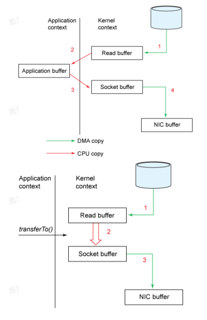

B 站图灵课堂：https://www.bilibili.com/video/BV1aM4y1T7PY?from=search&seid=11805949860086272300
# 笔试
# 看一下代码回答问题（一）
/** | |
* 问题：在这中间可以添加 N 行代码，但必须保证 s 引用的指向不变，最终将输出变成 abcd | |
* 核心考的是反射，而不是使用 replace 或者 stringbuilder | |
*/ | |
@Test | |
public void test1() throws Exception { | |
String s = new String("abc"); | |
// 在这中间可以添加 N 行代码，但必须保证 s 引用的指向不变，最终将输出变成 abcd | |
// 利用反射，string 源码中的就是利用属性名为 value 的 char 类型数组组成的我们只需要通过反射来修改属性 value 就好了 | |
Field value = s.getClass().getDeclaredField("value"); | |
value.setAccessible(true); | |
value.set(s, "abcd".toCharArray()); | |
System.out.println(s); | |
} |
# 看一下代码回答问题（二）
/** | |
* 首先 s1 == s2 考察的是 s1 是 new 在堆空间开辟内存空间，s1 指向的是堆内存地址 | |
* s2 则是首先判断字符串常量池有没有 abc，有则引用没有则添加到常量池，所以是 | |
* s1 == s2 为 false | |
* | |
* 首先了解下 intern 方法，然后理解以后 s2 == s3 为 true 是因为 s1 调用 intern 方法首先 | |
* 会去常量池去找引用，而此时 s2 已经在常量池中添加了 abc，所以 s1 的 intern 方法直接把 | |
* abc 在常量池的引用给了 s3，所以 s3 等于 s2 | |
*/ | |
@Test | |
public void review2(){ | |
String s1 = new String("abc"); | |
String s2 = "abc"; | |
// s1 == s2 true or false? | |
System.out.println(s1 == s2); // false | |
//string 对象的 intern 方法，首先会检查字符串常量池中是否存在 "abc"， | |
// 如果存在则返回该字符串引用，如果不存在，则把 "abc" 添加到字符串常量中， | |
// 并返回该字符串常量的引用。 | |
String s3 = s1.intern(); | |
// s3 == s2 true or false? | |
System.out.println(s3 == s2); // true | |
} |
# 看一下代码回答问题（三）
/** | |
* 原理可以参考 integer 源码， | |
* | |
* 在 interger 类中，存在一个静态内部类 IntegerCache，该类中存在一个 integer cachel， | |
* 并且存在一个 static 块，会在加载类的时候执行， | |
* 会将 - 128 至 127 这些数字提前生成 integer 对象，并缓存在 cache 数组中，当我们在定义 Integer 数字时， | |
* 会调用 IntegerSvalueo 防法，valueo 仿法会判断所定义的数字是否在 - 128 至 127 之间， | |
* 如果存在则直接从 cache 数组中获取 integer 对象，如果超过，则生成一个新的 nteger 对象。 | |
*/ | |
@Test | |
public void review3(){ | |
Integer i1 = 100; // 直接写数字赋值给 i1 等同于 调用了 integer 的 valueof 方法 | |
Integer i2 = 100; | |
System.out.println(i1 == i2); // true | |
Integer i3 = 128; | |
Integer i4 = 128; | |
System.out.println(i3 == i4); // false | |
} |
# String、StringBuffer、StringBuilder 区别
1.String 是不可变的，如果尝试去修改，会新生成一个字符串对象，StringBuffer 和 StringBuilder 是可变的 2.StringBuffer 是线程安全的，StringBuilder 是线程不安全的，所以在单线程环境下 StringBuilder 效率会更高
/** | |
*String、StringBuffer、StringBuilder 区别 | |
* | |
* 1.String 是不可变的，如果尝试去修改，会新生成一个字符串对象，StringBuffer 和 StringBuilder 是可变的 | |
* 2.StringBuffer 是线程安全的，StringBuilder 是线程不安全的，所以在单线程环境下 StringBuilder 效率会更高 | |
*/ | |
@Test | |
public void review4(){ | |
String s1 = "abc"; | |
s1 = "abcd"; // 即使引用地址不会变化，但是却生成了新的字符串对象 | |
// StringBuffer StringBuilder 不会生成新的字符串对象 | |
} |
# ArrayList 和 LinkedList 有哪些区别？
首先，他们的底层数据结构不同，Arraylist 底层是基于数组实现的，LinkedList 底层是基于链表实现的
由于底层数据结构不同，他们所适用的场景也不同，Arraylist 更适合随机查找，Linkedlist 更适合删除和添加，查询、添加、删除的时间复杂度不同
另外 ArrayList 和 LinkedList 都实现了 List 接口，但是 LinkedList 还额外实现了 Deque 接口，所以 LinkedList 还可以当做队列来使用
Arraylist 底层是基于数组
public boolean add(E e) { | |
ensureCapacityInternal(size + 1); // Increments modCount!! | |
elementData[size++] = e; // 基于数组实现的 | |
return true; | |
} |
strings.add(3,""); // 该方法由于底层是数组定为索引为 3 特别快，但是由于集合要扩容，还有后面数据索引往后移动，所以 size 越大速度会变慢 |
LinkedList 底层是基于链表
public boolean add(E e) { | |
linkLast(e); | |
return true; | |
} | |
void linkLast(E e) { | |
final Node<E> l = last; // 链表实现的 | |
final Node<E> newNode = new Node<>(l, e, null); | |
last = newNode; | |
if (l == null) | |
first = newNode; | |
else | |
l.next = newNode; | |
size++; | |
modCount++; | |
} |
linkedList.add(3,"");// 由于底层是链表所以不需要扩容，但是索引需要找到头节点遍历到索引为 3，需要遍历 |
# CopyOnWriteArrayList 的底层原理是怎样的？
- ⾸先 CopyOnWriteArrayList 内部也是⽤过数组来实现的，在向 CopyOnWriteArrayList 添加元素
时，会复制⼀个新的数组，写操作在新数组上进⾏，读操作在原数组上进⾏ - 并且，写操作会加锁，防⽌出现并发写⼊丢失数据的问题
- 写操作结束之后会把原数组指向新数组
- CopyOnWriteArrayList 允许在写操作时来读取数据，⼤⼤提⾼了读的性能，因此适合读多写少的应
⽤场景，但是 CopyOnWriteArrayList 会⽐较占内存，同时可能读到的数据不是实时最新的数据，所
以不适合实时性要求很⾼的场景
@Testpublic void review6(){ List<String> array = new ArrayList<>(); array.add("1"); // 多线程高并发的时候，假设 a 线程添加 1，b 线程添加 2，可能会出现 1 添加的呗 b 线程添加的 2 覆盖造成数据丢失 array.add ("2"); CopyOnWriteArrayList<String> list = new CopyOnWriteArrayList<>(); list.add (""); // 写不会出现数据丢失，因为枷锁了线程写操作需要排队} |
源代码
public boolean add(E e) { final ReentrantLock lock = this.lock; // 加锁保证高并发不会出现数据丢失问题 lock.lock (); try { Object [] elements = getArray (); // 获取原数组 int len = elements.length; Object [] newElements = Arrays.copyOf (elements, len + 1); // 创建新数组复制并 + 1 newElements [len] = e; // 赋值 setArray (newElements); // 重新赋值原数组变为新数组，并且还支持写操作的读，但是由于复制操作 // 读 读的是原数组如果没完成 setArray 方法会读到不是最新数据 return true; } finally { lock.unlock (); }} |
# HashMap 中 put 方法的过程？
- 调用哈希函数获取
Key对应的hash值，再计算其数组下标； - 如果没有出现哈希冲突，则直接放入数组；如果出现哈希冲突，则以链表的方式放在链表后面；
- 如果链表长度超过阀值 (
TREEIFYTHRESHOLD==8), 就把链表转成红黑树，链表长度低于 6, 就把红黑树转回链表； - 如果结点的
key已经存在，则替换其value即可； - 如果集合中的键值对大于 12, 调用
resize方法进行数组扩容。

# 说说你对红黑树的见解？
- 1、每个节点非红即黑
- 2、根节点总是黑色的
- 3、如果节点是红色的，则它的子节点必须是黑色的 (反之不一定)
- 4、每个叶子节点都是黑色的空节点 (NIL 节点)
- 5、从根节点到叶节点或空子节点的每条路径，必须包含相同数目的黑色节点 (即相同的黑色高度)
- https://blog.csdn.net/qq_36610462/article/details/83277524
# HashMap,LinkedHashMap,TreeMap 有什么区别？
HashMap参考其他问题；LinkedHashMap保存了记录的插入顺序，在用Iterator遍历时，先取到的记录肯定是先插入的；遍历比HashMap慢；TreeMap实现SortMap接口，能够把它保存的记录根据键排序 (默认按键值升序排序，也可以指定排序的比较器)
# HashMap 待续...
# ConcurrentHashMap……
# ThreadLocal 的底层原理
- ThreadLocal 是 Java 中所提供的线程本地存储机制，可以利⽤该机制将数据缓存在某个线程内部，
该线程可以在任意时刻、任意⽅法中获取缓存的数据 - ThreadLocal 底层是通过 ThreadLocalMap 来实现的，每个 Thread 对象（注意不是 ThreadLocal 对
象）中都存在⼀个 ThreadLocalMap，Map 的 key 为 ThreadLocal 对象，Map 的 value 为需要缓存的
值 - 如果在线程池中使⽤ ThreadLocal 会造成内存泄漏，因为当 ThreadLocal 对象使⽤完之后，应该要
把设置的 key，value，也就是 Entry 对象进⾏回收，但线程池中的线程不会回收，⽽线程对象是通过
强引⽤指向 ThreadLocalMap，ThreadLocalMap 也是通过强引⽤指向 Entry 对象，线程不被回收，
Entry 对象也就不会被回收，从⽽出现内存泄漏，解决办法是，在使⽤了 ThreadLocal 对象之后，⼿
动调⽤ ThreadLocal 的 remove ⽅法，⼿动清楚 Entry 对象 - ThreadLocal 经典的应⽤场景就是连接管理（⼀个线程持有⼀个连接，该连接对象可以在不同的⽅
法之间进⾏传递，线程之间不共享同⼀个连接）
# 如何理解 volatile 关键字
在并发领域中，存在三⼤特性：原⼦性、有序性、可⻅性。volatile 关键字⽤来修饰对象的属性，在并发 环境下可以保证这个属性的可⻅性，对于加了 volatile 关键字的属性，在对这个属性进⾏修改时，会直接 将 CPU ⾼级缓存中的数据写回到主内存，对这个变量的读取也会直接从主内存中读取，从⽽保证了可⻅ 性，底层是通过操作系统的内存屏障来实现的，由于使⽤了内存屏障，所以会禁⽌指令重排，所以同时 也就保证了有序性，在很多并发场景下，如果⽤好 volatile 关键字可以很好的提⾼执⾏效率。
# ReentrantLock 中的公平锁和⾮公平锁的底层实现
⾸先不管是公平锁和⾮公平锁，它们的底层实现都会使⽤ AQS 来进⾏排队，它们的区别在于：线程在使 ⽤ lock () ⽅法加锁时，如果是公平锁，会先检查 AQS 队列中是否存在线程在排队，如果有线程在排队， 则当前线程也进⾏排队，如果是⾮公平锁，则不会去检查是否有线程在排队，⽽是直接竞争锁。
不管是公平锁还是⾮公平锁，⼀旦没竞争到锁，都会进⾏排队，当锁释放时，都是唤醒排在最前⾯的线 程，所以⾮公平锁只是体现在了线程加锁阶段，⽽没有体现在线程被唤醒阶段。
另外，ReentrantLock 是可重⼊锁，不管是公平锁还是⾮公平锁都是可重⼊的。
# ReentrantLock 中 tryLock () 和 lock () ⽅法的区别
- tryLock () 表示尝试加锁，可能加到，也可能加不到，该⽅法不会阻塞线程，如果加到锁则返回
true，没有加到则返回 false - lock () 表示阻塞加锁，线程会阻塞直到加到锁，⽅法也没有返回值
# CountDownLatch 和 Semaphore 的区别和底层原理
CountDownLatch 表示计数器，可以给 CountDownLatch 设置⼀个数字，⼀个线程调⽤
CountDownLatch 的 await () 将会阻塞，其他线程可以调⽤ CountDownLatch 的 countDown () ⽅法来对
CountDownLatch 中的数字减⼀，当数字被减成 0 后，所有 await 的线程都将被唤醒。
对应的底层原理就是，调⽤ await () ⽅法的线程会利⽤ AQS 排队，⼀旦数字被减为 0，则会将 AQS 中
排队的线程依次唤醒。
Semaphore 表示信号量，可以设置许可的个数，表示同时允许最多多少个线程使⽤该信号量，通
过 acquire () 来获取许可，如果没有许可可⽤则线程阻塞，并通过 AQS 来排队，可以通过 release () ⽅法来释放许可，当某个线程释放了某个许可后，会从 AQS 中正在排队的第⼀个线程开始依次唤 醒，直到没有空闲许可。
# Sychronized 的偏向锁、轻量级锁、重量级锁
- ** 偏向锁：** 在锁对象的对象头中记录⼀下当前获取到该锁的线程 ID，该线程下次如果⼜来获取该锁就
可以直接获取到了 - ** 轻量级锁：** 由偏向锁升级⽽来，当⼀个线程获取到锁后，此时这把锁是偏向锁，此时如果有第⼆个
线程来竞争锁，偏向锁就会升级为轻量级锁，之所以叫轻量级锁，是为了和重量级锁区分开来，轻
量级锁底层是通过⾃旋来实现的，并不会阻塞线程 - 如果⾃旋次数过多仍然没有获取到锁，则会升级为重量级锁，重量级锁会导致线程阻塞
- ** ⾃旋锁：** ⾃旋锁就是线程在获取锁的过程中，不会去阻塞线程，也就⽆所谓唤醒线程，阻塞和唤醒
这两个步骤都是需要操作系统去进⾏的，⽐较消耗时间，⾃旋锁是线程通过 CAS 获取预期的⼀个标
记，如果没有获取到，则继续循环获取，如果获取到了则表示获取到了锁，这个过程线程⼀直在运
⾏中，相对⽽⾔没有使⽤太多的操作系统资源，⽐较轻量。
# Sychronized 和 ReentrantLock 的区别
- sychronized 是⼀个关键字，ReentrantLock 是⼀个类
- sychronized 会⾃动的加锁与释放锁，ReentrantLock 需要程序员⼿动加锁与释放锁
- sychronized 的底层是 JVM 层⾯的锁，ReentrantLock 是 API 层⾯的锁
- sychronized 是⾮公平锁，ReentrantLock 可以选择公平锁或⾮公平锁
- sychronized 锁的是对象，锁信息保存在对象头中，ReentrantLock 通过代码中 int 类型的 state 标识
来标识锁的状态 - sychronized 底层有⼀个锁升级的过程
# 线程池的底层⼯作原理
线程池内部是通过队列 + 线程实现的，当我们利⽤线程池执⾏任务时：
- 如果此时线程池中的线程数量⼩于 corePoolSize，即使线程池中的线程都处于空闲状态，也要创建
新的线程来处理被添加的任务。 - 如果此时线程池中的线程数量等于 corePoolSize，但是缓冲队列 workQueue 未满，那么任务被放⼊
缓冲队列。 - 如果此时线程池中的线程数量⼤于等于 corePoolSize，缓冲队列 workQueue 满，并且线程池中的数
量⼩于 maximumPoolSize，建新的线程来处理被添加的任务。 - 如果此时线程池中的线程数量⼤于 corePoolSize，缓冲队列 workQueue 满，并且线程池中的数量等
于 maximumPoolSize，那么通过 handler 所指定的策略来处理此任务。 - 当线程池中的线程数量⼤于 corePoolSize 时，如果某线程空闲时间超过 keepAliveTime，线程将被
终⽌。这样，线程池可以动态的调整池中的线程数
# JVM 中哪些是线程共享区

# JVM 中哪些可以作为 gc root
什么是 gc root，JVM 在进⾏垃圾回收时，需要找到 “垃圾” 对象，也就是没有被引⽤的对象，但是直接 找 “垃圾” 对象是⽐较耗时的，所以反过来，先找 “⾮垃圾” 对象，也就是正常对象，那么就需要从某 些 “根” 开始去找，根据这些 “根” 的引⽤路径找到正常对象，⽽这些 “根” 有⼀个特征，就是它只会引⽤其 他对象，⽽不会被其他对象引⽤，例如：栈中的本地变量、⽅法区中的静态变量、本地⽅法栈中的变 量、正在运⾏的线程等可以作为 gc root。
# 说说类加载器双亲委派模型
JVM 中存在三个默认的类加载器：
- BootstrapClassLoader
- ExtClassLoader
- AppClassLoader
AppClassLoader 的⽗加载器是 ExtClassLoader，ExtClassLoader 的⽗加载器是
BootstrapClassLoader。
JVM 在加载⼀个类时，会调⽤ AppClassLoader 的 loadClass ⽅法来加载这个类，不过在这个⽅法中，会先使⽤ ExtClassLoader 的 loadClass ⽅法来加载类，同样 ExtClassLoader 的 loadClass ⽅法中会先使⽤
BootstrapClassLoader 来加载类，如果 BootstrapClassLoader 加载到了就直接成功，如果 BootstrapClassLoader 没有加载到，那么 ExtClassLoader 就会⾃⼰尝试加载该类，如果没有加载到，
那么则会由 AppClassLoader 来加载这个类。
所以，双亲委派指得是，JVM 在加载类时，会委派给 Ext 和 Bootstrap 进⾏加载，如果没加载到才由⾃⼰
进⾏加载。
# Tomcat 中为什么要使⽤⾃定义类加载器
⼀个 Tomcat 中可以部署多个应⽤，⽽每个应⽤中都存在很多类，并且各个应⽤中的类是独⽴的，全类 名是可以相同的，⽐如⼀个订单系统中可能存在 com.zhouyu.User 类，⼀个库存系统中可能也存在 com.zhouyu.User 类，⼀个 Tomcat，不管内部部署了多少应⽤，Tomcat 启动之后就是⼀个 Java 进程， 也就是⼀个 JVM，所以如果 Tomcat 中只存在⼀个类加载器，⽐如默认的 AppClassLoader，那么就只能 加载⼀个 com.zhouyu.User 类，这是有问题的，⽽在 Tomcat 中，会为部署的每个应⽤都⽣成⼀个类加载 器实例，名字叫做 WebAppClassLoader，这样 Tomcat 中每个应⽤就可以使⽤⾃⼰的类加载器去加载⾃ ⼰的类，从⽽达到应⽤之间的类隔离，不出现冲突。另外 Tomcat 还利⽤⾃定义加载器实现了热加载功 能。
# Tomcat 如何进⾏优化？
对于 Tomcat 调优，可以从两个⽅⾯来进⾏调整：内存和线程。
⾸先启动 Tomcat，实际上就是启动了⼀个 JVM，所以可以按 JVM 调优的⽅式来进⾏调整，从⽽达到
Tomcat 优化的⽬的。
另外 Tomcat 中设计了⼀些缓存区，⽐如 appReadBufSize、bufferPoolSize 等缓存区来提⾼吞吐量。
还可以调整 Tomcat 的线程，⽐如调整 minSpareThreads 参数来改变 Tomcat 空闲时的线程数，调整
maxThreads 参数来设置 Tomcat 处理连接的最⼤线程数。
并且还可以调整 IO 模型，⽐如使⽤ NIO、APR 这种相⽐于 BIO 更加⾼效的 IO 模型。(默认 Tomcat7 使用的是 bio)
# 浏览器发出⼀个请求到收到响应经历了哪些步骤？
- 浏览器解析⽤户输⼊的 URL，⽣成⼀个 HTTP 格式的请求
- 先根据 URL 域名从本地 hosts ⽂件查找是否有映射 IP，如果没有就将域名发送给电脑所配置的 DNS 进
⾏域名解析，得到 IP 地址 - 浏览器通过操作系统将请求通过四层⽹络协议发送出去
- 途中可能会经过各种路由器、交换机，最终到达服务器
- 服务器收到请求后，根据请求所指定的端⼝，将请求传递给绑定了该端⼝的应⽤程序，⽐如 8080 被
tomcat 占⽤了 - tomcat 接收到请求数据后，按照 http 协议的格式进⾏解析，解析得到所要访问的 servlet
- 然后 servlet 来处理这个请求，如果是 SpringMVC 中的 DispatcherServlet，那么则会找到对应的
Controller 中的⽅法，并执⾏该⽅法得到结果 - Tomcat 得到响应结果后封装成 HTTP 响应的格式，并再次通过⽹络发送给浏览器所在的服务器
- 浏览器所在的服务器拿到结果后再传递给浏览器，浏览器则负责解析并渲染
# 跨域请求是什么？有什么问题？怎么解决？
跨域是指浏览器在发起⽹络请求时，会检查该请求所对应的协议、域名、端⼝和当前⽹⻚是否⼀致，如
果不⼀致则浏览器会进⾏限制，⽐如在 www.baidu.com 的某个⽹⻚中，如果使⽤ ajax 去访问
www.jd.com 是不⾏的，但是如果是 img、iframe、script 等标签的 src 属性去访问则是可以的，之所以浏
览器要做这层限制，是为了⽤户信息安全。但是如果开发者想要绕过这层限制也是可以的：
- response 添加 header，⽐如 resp.setHeader ("Access-Control-Allow-Origin", "*"); 表示可以访问
所有⽹站，不受是否同源的限制 - jsonp 的⽅式，该技术底层就是基于 script 标签来实现的，因为 script 标签是可以跨域的
- 后台⾃⼰控制，先访问同域名下的接⼝，然后在接⼝中再去使⽤ HTTPClient 等⼯具去调⽤⽬标接⼝
- ⽹关，和第三种⽅式类似，都是交给后台服务来进⾏跨域访问
# Spring 中的 Bean 创建的⽣命周期有哪些步骤
Spring 中⼀个 Bean 的创建⼤概分为以下⼏个步骤：
- 推断构造⽅法
- 实例化
- 填充属性，也就是依赖注⼊
- 处理 Aware 回调
- 初始化前，处理 @PostConstruct 注解
- 初始化，处理 InitializingBean 接⼝
- 初始化后，进⾏ AOP
# Spring 中 Bean 是线程安全的吗
Spring 本身并没有针对 Bean 做线程安全的处理，所以：
- 如果 Bean 是⽆状态的，那么 Bean 则是线程安全的
- 如果 Bean 是有状态的，那么 Bean 则不是线程安全的
另外，Bean 是不是线程安全，跟 Bean 的作⽤域没有关系，Bean 的作⽤域只是表示 Bean 的⽣命周期范
围，对于任何⽣命周期的 Bean 都是⼀个对象，这个对象是不是线程安全的，还是得看这个 Bean 对象本
身。
# ApplicationContext 和 BeanFactory 有什么区别
BeanFactory 是 Spring 中⾮常核⼼的组件，表示 Bean ⼯⼚，可以⽣成 Bean，维护 Bean，⽽ ApplicationContext 继承了 BeanFactory，所以 ApplicationContext 拥有 BeanFactory 所有的特点，也 是⼀个 Bean ⼯⼚，但是 ApplicationContext 除开继承了 BeanFactory 之外，还继承了诸如 EnvironmentCapable、MessageSource、ApplicationEventPublisher 等接⼝，从⽽ ApplicationContext 还有获取系统环境变量、国际化、事件发布等功能，这是 BeanFactory 所不具备的
# Spring 中的事务是如何实现的
@Transactional(timeout = 30) //a 事务 b 会随 a 的超时时间不会用自己的子事务无效 （同一个 service 调用 bc 方法其实还是共用一个事务） | |
public void a(){ | |
// （同一个 service 调用 bc 方法其实还是共用一个事务） | |
OrderServiceImpl o = (OrderServiceImpl) AopContext.currentProxy(); | |
o.b();//a 事务 | |
o.c();// 新事务 （不随 a 回滚） | |
int i = 10 / 0; | |
} | |
@Transactional(propagation = Propagation.REQUIRED,timeout = 2) // 需要一个事务：如果前面有了就公用一个事务 | |
public void b(){} | |
@Transactional(propagation = Propagation.REQUIRES_NEW) // 需要一个新的事务，自己用一个事务 | |
public void c(){} |
- Spring 事务底层是基于数据库事务和 AOP 机制的
- ⾸先对于使⽤了 @Transactional 注解的 Bean，Spring 会创建⼀个代理对象作为 Bean
- 当调⽤代理对象的⽅法时，会先判断该⽅法上是否加了 @Transactional 注解
- 如果加了，那么则利⽤事务管理器创建⼀个数据库连接
- 并且修改数据库连接的 autocommit 属性为 false，禁⽌此连接的⾃动提交，这是实现 Spring 事务⾮
常重要的⼀步
# Spring 中什么时候 @Transactional 会失效
因为 Spring 事务是基于代理来实现的，所以某个加了 @Transactional 的⽅法只有是被代理对象调⽤时， 那么这个注解才会⽣效，所以如果是被代理对象来调⽤这个⽅法，那么 @Transactional 是不会失效的。
（比如自己 new 一个不用依赖注入就不会生效）
同时如果某个⽅法是 private 的，那么 @Transactional 也会失效，因为底层 cglib 是基于⽗⼦类来实现 的，⼦类是不能重载⽗类的 private ⽅法的，所以⽆法很好的利⽤代理，也会导致 @Transactianal 失效
# Spring 容器启动流程是怎样的
- 在创建 Spring 容器，也就是启动 Spring 时：
- ⾸先会进⾏扫描，扫描得到所有的 BeanDefinition 对象，并存在⼀个 Map 中
- 然后筛选出⾮懒加载的单例 BeanDefinition 进⾏创建 Bean，对于多例 Bean 不需要在启动过程中去
进⾏创建，对于多例 Bean 会在每次获取 Bean 时利⽤ BeanDefinition 去创建 - 利⽤ BeanDefinition 创建 Bean 就是 Bean 的创建⽣命周期，这期间包括了合并 BeanDefinitio
构造⽅法、实例化、属性填充、初始化前、初始化、初始化后等步骤，其中 AOP 就是发⽣在初始化
后这⼀步骤中 - 单例 Bean 创建完了之后，Spring 会发布⼀个容器启动事件
- Spring 启动结束
- 在源码中会更复杂，⽐如源码中会提供⼀些模板⽅法，让⼦类来实现，⽐如源码中还涉及到⼀些
BeanFactoryPostProcessor 和 BeanPostProcessor 的注册，Spring 的扫描就是通过
BenaFactoryPostProcessor 来实现的，依赖注⼊就是通过 BeanPostProcessor 来实现的 - 在 Spring 启动过程中还会去处理 @Import 等注解
# Spring ⽤到了哪些设计模式
# SpringMVC 的底层⼯作流程
- ⽤户发送请求⾄前端控制器 DispatcherServlet。
- DispatcherServlet 收到请求调⽤ HandlerMapping 处理器映射器。
- 处理器映射器找到具体的处理器 (可以根据 xml 配置、注解进⾏查找)，⽣成处理器及处理器拦截器
(如果有则⽣成) ⼀并返回给 DispatcherServlet。 - DispatcherServlet 调⽤ HandlerAdapter 处理器适配器。
- HandlerAdapter 经过适配调⽤具体的处理器 (Controller，也叫后端控制器)
- Controller 执⾏完成返回 ModelAndView。
- HandlerAdapter 将 controller 执⾏结果 ModelAndView 返回给 DispatcherServle
- DispatcherServlet 将 ModelAndView 传给 ViewReslover 视图解析器。
- ViewReslover 解析后返回具体 View。
- DispatcherServlet 根据 View 进⾏渲染视图（即将模型数据填充⾄视图中）。
# Spring refresh
@Override | |
public void refresh() throws BeansException, IllegalStateException { | |
synchronized (this.startupShutdownMonitor) { | |
// 准备，记录容器的启动时间 startupDate, 标记容器为激活，初始化上下文环境如文件路径信息，验证必填属性是否填写 | |
prepareRefresh(); | |
// 这步比较重要 (解析)，告诉子类去刷新 bean 工厂，这步完成后配置文件就解析成一个个 bean 定义，注册到 BeanFactory（但是未被初始化，仅将信息写到了 beanDefination 的 map 中） | |
ConfigurableListableBeanFactory beanFactory = obtainFreshBeanFactory(); | |
// 设置 beanFactory 类加载器，添加多个 beanPostProcesser | |
prepareBeanFactory(beanFactory); | |
try { | |
// 允许子类上下文中对 beanFactory 做后期处理 | |
postProcessBeanFactory(beanFactory); | |
// 调用 BeanFactoryPostProcessor 各个实现类的方法 | |
invokeBeanFactoryPostProcessors(beanFactory); | |
// 注册 BeanPostProcessor 的实现类，注意看和 BeanFactoryPostProcessor 的区别 | |
// 此接口两个方法: postProcessBeforeInitialization 和 postProcessAfterInitialization | |
// 两个方法分别在 Bean 初始化之前和初始化之后得到执行。注意，到这里 Bean 还没初始化 | |
registerBeanPostProcessors(beanFactory); | |
// 初始化 ApplicationContext 的 MessageSource | |
initMessageSource(); | |
// 初始化 ApplicationContext 事件广播器 | |
initApplicationEventMulticaster(); | |
// 初始化子类特殊 bean（钩子方法） | |
onRefresh(); | |
// 注册事件监听器 | |
registerListeners(); | |
// 初始化所有 singleton bean 重点！！重点！！ | |
finishBeanFactoryInitialization(beanFactory); | |
// 广播事件，ApplicationContext 初始化完成 | |
finishRefresh(); | |
} catch (BeansException ex) { | |
.................... | |
} |
1、prepareRefresh();
容器刷新前的准备，设置上下文状态，获取属性，验证必要的属性等
2、ConfigurableListableBeanFactory beanFactory = obtainFreshBeanFactory();
获取新的 beanFactory，销毁原有 beanFactory、为每个 bean 生成 BeanDefinition 等
3、prepareBeanFactory(beanFactory);
配置标准的 beanFactory，设置 ClassLoader，设置 SpEL 表达式解析器等
4、postProcessBeanFactory(beanFactory);
模板方法，允许在子类中对 beanFactory 进行后置处理。
5、invokeBeanFactoryPostProcessors(beanFactory);
实例化并调用所有注册的 beanFactory 后置处理器（实现接口 BeanFactoryPostProcessor 的 bean，在 beanFactory 标准初始化之后执行）。
例如:
PropertyPlaceholderConfigurer (处理占位符)
6、registerBeanPostProcessors(beanFactory);
实例化和注册 beanFactory 中扩展了 BeanPostProcessor 的 bean。
例如：
AutowiredAnnotationBeanPostProcessor (处理被 @Autowired 注解修饰的 bean 并注入)
RequiredAnnotationBeanPostProcessor (处理被 @Required 注解修饰的方法)
CommonAnnotationBeanPostProcessor (处理 @PreDestroy、@PostConstruct、@Resource 等多个注解的作用) 等。
7、initMessageSource();
初始化国际化工具类 MessageSource
8、initApplicationEventMulticaster();
初始化时间广播器
9、onRefresh();
模板方法，在容器刷新的时候可以自定义逻辑，不同的 Spring 容器做不同的事情。
10、registerListeners();
注册监听器，广播 early application events
11、finishBeanFactoryInitialization(beanFactory);
实例化所有剩余的（非懒加载）单例
比如 invokeBeanFactoryPostProcessors 方法中根据各种注解解析出来的类，在这个时候都会被初始化。
实例化的过程各种 BeanPostProcessor 开始起作用。
12、finishRefresh();
refresh 做完之后需要做的其他事情。
清除上下文资源缓存（如扫描中的 ASM 元数据）
初始化上下文的生命周期处理器，并刷新（找出 Spring 容器中实现了 Lifecycle 接口的 bean 并执行 start () 方法）。
发布 ContextRefreshedEvent 事件告知对应的 ApplicationListener 进行响应的操作
# SpringBoot 中常⽤注解及其底层实现
- @SpringBootApplication 注解：这个注解标识了⼀个 SpringBoot ⼯程，它实际上是另外三个注解
的组合，这三个注解是：
a. @SpringBootConfiguration：这个注解实际就是⼀个 @Configuration，表示启动类也是⼀个
配置类
b. @EnableAutoConfiguration：向 Spring 容器中导⼊了⼀个 Selector，⽤来加载 ClassPath 下
SpringFactories 中所定义的⾃动配置类，将这些⾃动加载为配置 Bean
c. @ComponentScan：标识扫描路径，因为默认是没有配置实际扫描路径，所以 SpringBoot 扫
描的路径是启动类所在的当前⽬录 - @Bean 注解：⽤来定义 Bean，类似于 XML 中的 <bean> 标签，Spring 在启动时，会对加了 @Bean 注
解的⽅法进⾏解析，将⽅法的名字做为 beanName，并通过执⾏⽅法得到 bean 对象 - @Controller、@Service、@ResponseBody、@Autowired 都可以说
# SpringBoot 是如何启动 Tomcat 的
- ⾸先，SpringBoot 在启动时会先创建⼀个 Spring 容器
- 在创建 Spring 容器过程中，会利⽤ @ConditionalOnClass 技术来判断当前 classpath 中是否存在
Tomcat 依赖，如果存在则会⽣成⼀个启动 Tomcat 的 Bean - Spring 容器创建完之后，就会获取启动 Tomcat 的 Bean，并创建 Tomcat 对象，并绑定端⼝等，然后
启动 Tomcat
# Mybatis 存在哪些优点和缺点
优点：
- 基于 SQL 语句编程，相当灵活，不会对应⽤程序或者数据库的现有设计造成任何影响，SQL 单独
写，解除 sql 与程序代码的耦合，便于统⼀管理。 - 与 JDBC 相⽐，减少了 50% 以上的代码量，消除了 JDBC ⼤量冗余的代码，不需要⼿动开关连
接； - 很好的与各种数据库兼容（ 因为 MyBatis 使⽤ JDBC 来连接数据库，所以只要 JDBC ⽀持的数据
库 MyBatis 都⽀持）。 - 能够与 Spring 很好的集成；
- 提供映射标签， ⽀持对象与数据库的 ORM 字段关系映射； 提供对象关系映射标签， ⽀持对象关
系组件维护。
# Mybatis 中 #{} 和 ${} 的区别是什么？
- #{} 是预编译处理、是占位符， ${} 是字符串替换、是拼接符
- Mybatis 在处理 #{} 时，会将 sql 中的 #{} 替换为？号，调⽤ PreparedStatement 来赋值
- Mybatis 在处理 {} 替换成变量的值，调⽤ Statement 来赋值
- 使⽤ #{} 可以有效的防⽌ SQL 注⼊，提⾼系统安全性
# 什么是 CAP 理论
CAP 理论是分布式领域中⾮常重要的⼀个指导理论，C（Consistency）表示强⼀致性， A（Availability）表示可⽤性，P（Partition Tolerance）表示分区容错性，CAP 理论指出在⽬前的硬件 条件下，⼀个分布式系统是必须要保证分区容错性的，⽽在这个前提下，分布式系统要么保证 CP，要么 保证 AP，⽆法同时保证 CAP。
分区容错性表示，⼀个系统虽然是分布式的，但是对外看上去应该是⼀个整体，不能由于分布式系统内 部的某个结点挂点，或⽹络出现了故障，⽽导致系统对外出现异常。所以，对于分布式系统⽽⾔是⼀定 要保证分区容错性的。
强⼀致性表示，⼀个分布式系统中各个结点之间能及时的同步数据，在数据同步过程中，是不能对外提 供服务的，不然就会造成数据不⼀致，所以强⼀致性和可⽤性是不能同时满⾜的。
可⽤性表示，⼀个分布式系统对外要保证可⽤。
# 什么是 BASE 理论
由于不能同时满⾜ CAP，所以出现了 BASE 理论：
- BA：Basically Available，表示基本可⽤，表示可以允许⼀定程度的不可⽤，⽐如由于系统故障，
请求时间变⻓，或者由于系统故障导致部分⾮核⼼功能不可⽤，都是允许的 - S：Soft state：表示分布式系统可以处于⼀种中间状态，⽐如数据正在同步
- E：Eventually consistent，表示最终⼀致性，不要求分布式系统数据实时达到⼀致，允许在经过⼀
段时间后再达到⼀致，在达到⼀致过程中，系统也是可⽤的
# 什么是 RPC
RPC，表示远程过程调⽤，对于 Java 这种⾯试对象语⾔，也可以理解为远程⽅法调⽤，RPC 调⽤和 HTTP 调⽤是有区别的，RPC 表示的是⼀种调⽤远程⽅法的⽅式，可以使⽤ HTTP 协议、或直接基于 TCP 协议来实现 RPC，在 Java 中，我们可以通过直接使⽤某个服务接⼝的代理对象来执⾏⽅法，⽽底层则通 过构造 HTTP 请求来调⽤远端的⽅法，所以，有⼀种说法是 RPC 协议是 HTTP 协议之上的⼀种协议，也是 可以理解的。
# 分布式 ID 是什么？有哪些解决⽅案？
在开发中，我们通常会需要⼀个唯⼀ ID 来标识数据，如果是单体架构，我们可以通过数据库的主键，或
直接在内存中维护⼀个⾃增数字来作为 ID 都是可以的，但对于⼀个分布式系统，就会有可能会出现 ID 冲
什么是 CAP 理论
什么是 BASE 理论
什么是 RPC
分布式 ID 是什么？有哪些解决⽅案？
22
突，此时有以下解决⽅案：
- uuid，这种⽅案复杂度最低，但是会影响存储空间和性能
- 利⽤单机数据库的⾃增主键，作为分布式 ID 的⽣成器，复杂度适中，ID ⻓度较之 uuid 更短，但是受
到单机数据库性能的限制，并发量⼤的时候，此⽅案也不是最优⽅案 - 利⽤ redis、zookeeper 的特性来⽣成 id，⽐如 redis 的⾃增命令、zookeeper 的顺序节点，这种⽅案
和单机数据库 (mysql) 相⽐，性能有所提⾼，可以适当选⽤ - 雪花算法，⼀切问题如果能直接⽤算法解决，那就是最合适的，利⽤雪花算法也可以⽣成分布式
ID，底层原理就是通过某台机器在某⼀毫秒内对某⼀个数字⾃增，这种⽅案也能保证分布式架构中
的系统 id 唯⼀，但是只能保证趋势递增。业界存在 tinyid、leaf 等开源中间件实现了雪花算法。
# 分布式锁的使⽤场景是什么？有哪些实现⽅案？
在单体架构中，多个线程都是属于同⼀个进程的，所以在线程并发执⾏时，遇到资源竞争时，可以利⽤
ReentrantLock、synchronized 等技术来作为锁，来控制共享资源的使⽤。
⽽在分布式架构中，多个线程是可能处于不同进程中的，⽽这些线程并发执⾏遇到资源竞争时，利⽤
ReentrantLock、synchronized 等技术是没办法来控制多个进程中的线程的，所以需要分布式锁，意思
就是，需要⼀个分布式锁⽣成器，分布式系统中的应⽤程序都可以来使⽤这个⽣成器所提供的锁，从⽽
达到多个进程中的线程使⽤同⼀把锁。
⽬前主流的分布式锁的实现⽅案有两种：
- zookeeper：利⽤的是 zookeeper 的临时节点、顺序节点、watch 机制来实现的，zookeeper 分布式
锁的特点是⾼⼀致性，因为 zookeeper 保证的是 CP，所以由它实现的分布式锁更可靠，不会出现混
乱 - redis：利⽤ redis 的 setnx、lua 脚本、消费订阅等机制来实现的，redis 分布式锁的特点是⾼可⽤，
因为 redis 保证的是 AP，所以由它实现的分布式锁可能不可靠，不稳定（⼀旦 redis 中的数据出现了
不⼀致），可能会出现多个客户端同时加到锁的情况
# Spring Cloud 有哪些常⽤组件，作⽤是什么？
- Eureka：注册中⼼
- Nacos：注册中⼼、配置中⼼
- Consul：注册中⼼、配置中⼼
- Spring Cloud Config：配置中⼼
- Feign/OpenFeign：RPC 调⽤
- Kong：服务⽹关
- Zuul：服务⽹关
- Spring Cloud Gateway：服务⽹关
- Ribbon：负载均衡
- Spring CLoud Sleuth：链路追踪
- Zipkin：链路追踪
- Seata：分布式事务
- Dubbo：RPC 调⽤
- Sentinel：服务熔断
- Hystrix：服务熔断
# 什么是服务雪崩？什么是服务限流？
- 当服务 A 调⽤服务 B，服务 B 调⽤ C，此时⼤量请求突然请求服务 A，假如服务 A 本身能抗住这些请
求，但是如果服务 C 抗不住，导致服务 C 请求堆积，从⽽服务 B 请求堆积，从⽽服务 A 不可⽤，这就
是服务雪崩，解决⽅式就是服务降级和服务熔断。 - 服务限流是指在⾼并发请求下，为了保护系统，可以对访问服务的请求进⾏数量上的限制，从⽽防
⽌系统不被⼤量请求压垮，在秒杀中，限流是⾮常重要的。
# 什么是服务熔断？什么是服务降级？区别是什么？
- 服务熔断是指，当服务 A 调⽤的某个服务 B 不可⽤时，上游服务 A 为了保证⾃⼰不受影响，从⽽不再
调⽤服务 B，直接返回⼀个结果，减轻服务 A 和服务 B 的压⼒，直到服务 B 恢复。 - 服务降级是指，当发现系统压⼒过载时，可以通过关闭某个服务，或限流某个服务来减轻系统压
⼒，这就是服务降级。
相同点：
1. 都是为了防⽌系统崩溃
2. 都让⽤户体验到某些功能暂时不可⽤
不同点：熔断是下游服务故障触发的，降级是为了降低系统负载
# BIO、NIO、AIO 分别是什么
- BIO：同步阻塞 IO，使⽤ BIO 读取数据时，线程会阻塞住，并且需要线程主动去查询是否有数据可
读，并且需要处理完⼀个 Socket 之后才能处理下⼀个 Socket - NIO：同步⾮阻塞 IO，使⽤ NIO 读取数据时，线程不会阻塞，但需要线程主动的去查询是否有 IO 事件
- AIO：也叫做 NIO 2.0，异步⾮阻塞 IO，使⽤ AIO 读取数据时，线程不会阻塞，并且当有数据可读时
会通知给线程，不需要线程主动去查询
# 零拷⻉是什么
零拷⻉指的是，应⽤程序在需要把内核中的⼀块区域数据转移到另外⼀块内核区域去时，不需要经过先 复制到⽤户空间，再转移到⽬标内核区域去了，⽽直接实现转移。

# Netty 是什么？和 Tomcat 有什么区别？特点是什么？
Netty 是⼀个基于 NIO 的异步⽹络通信框架，性能⾼，封装了原⽣ NIO 编码的复杂度，开发者可以直接使
⽤ Netty 来开发⾼效率的各种⽹络服务器，并且编码简单。
Tomcat 是⼀个 Web 服务器，是⼀个 Servlet 容器，基本上 Tomcat 内部只会运⾏ Servlet 程序，并处理
HTTP 请求，⽽ Netty 封装的是底层 IO 模型，关注的是⽹络数据的传输，⽽不关⼼具体的协议，可定制性
更⾼。
Netty 的特点：
- 异步、NIO 的⽹络通信框架
- ⾼性能
- ⾼扩展，⾼定制性
- 易⽤性
# Netty 的⾼性能体现在哪些⽅⾯
- NIO 模型，⽤最少的资源做更多的事情。
- 内存零拷⻉，尽量减少不必要的内存拷⻉，实现了更⾼效率的传输。
- 内存池设计，申请的内存可以重⽤，主要指直接内存。内部实现是⽤⼀颗⼆叉查找树管理内存分配
情况。 - 串⾏化处理读写 ：避免使⽤锁带来的性能开销。即消息的处理尽可能再同⼀个线程内完成，期间不
进⾏线程切换，这样就避免了多线程竞争和同步锁。表⾯上看，串⾏化设计似乎 CPU 利⽤率不⾼，
并发程度不够。但是，通过调整 NIO 线程池的线程参数，可以同时启动多个串⾏化的线程并⾏运
⾏，这种局部⽆锁化的串⾏线程设计相⽐⼀个队⾥ - 多个⼯作线程模型性能更优。 - ⾼性能序列化协议 ：⽀持 protobuf 等⾼性能序列化协议。
- ⾼效并发编程的体现 ：volatile 的⼤量、正确使⽤；CAS 和原⼦类的⼴泛使⽤；线程安全容器的使⽤；通过读写锁提升并发性能。
# Redis 有哪些数据结构？分别有哪些典型的应⽤场景？
Redis 的数据结构有：
- 字符串：可以⽤来做最简单的数据，可以缓存某个简单的字符串，也可以缓存某个 json 格式的字符
串，Redis 分布式锁的实现就利⽤了这种数据结构，还包括可以实现计数器、Session 共享、分布式
ID - 哈希表：可以⽤来存储⼀些 key-value 对，更适合⽤来存储对象
- 列表：Redis 的列表通过命令的组合，既可以当做栈，也可以当做队列来使⽤，可以⽤来缓存类似
微信公众号、微博等消息流数据 - 集合：和列表类似，也可以存储多个元素，但是不能重复，集合可以进⾏交集、并集、差集操作，
从⽽可以实现类似，我和某⼈共同关注的⼈、朋友圈点赞等功能 - 有序集合：集合是⽆序的，有序集合可以设置顺序，可以⽤来实现排⾏榜功能
# Redis 分布式锁底层是如何实现的？
- ⾸先利⽤ setnx 来保证：如果 key 不存在才能获取到锁，如果 key 存在，则获取不到锁
- 然后还要利⽤ lua 脚本来保证多个 redis 操作的原⼦性
- 同时还要考虑到锁过期，所以需要额外的⼀个看⻔狗定时任务来监听锁是否需要续约
- 同时还要考虑到 redis 节点挂掉后的情况，所以需要采⽤红锁的⽅式来同时向 N/2+1 个节点申请锁，
都申请到了才证明获取锁成功，这样就算其中某个 redis 节点挂掉了，锁也不能被其他客户端获取到
# Redis 主从复制的核⼼原理
Redis 的主从复制是提⾼ Redis 的可靠性的有效措施，主从复制的流程如下：
- 集群启动时，主从库间会先建⽴连接，为全量复制做准备
- 主库将所有数据同步给从库。从库收到数据后，在本地完成数据加载，这个过程依赖于内存快照
RDB - 在主库将数据同步给从库的过程中，主库不会阻塞，仍然可以正常接收请求。否则，redis 的服务就被中断
了。但是，这些请求中的写操作并没有记录到刚刚⽣成的 RDB ⽂件中。为了保证主从库的数据⼀致性，主
库会在内存中⽤专⻔的 replication buffer，记录 RDB ⽂件⽣成收到的所有写操作。 - 最后，也就是第三个阶段，主库会把第⼆阶段执⾏过程中新收到的写命令，再发送给从库。具体的操作
是，当主库完成 RDB ⽂件发送后，就会把此时 replocation buffer 中修改操作发送给从库，从库再执⾏这些
操作。这样⼀来，主从库就实现同步了 - 后续主库和从库都可以处理客户端读操作，写操作只能交给主库处理，主库接收到写操作后，还会将写操
作发送给从库，实现增量同步
# 缓存穿透、缓存击穿、缓存雪崩分别是什么
缓存中存放的⼤多都是热点数据，⽬的就是防⽌请求可以直接从缓存中获取到数据，⽽不⽤访问 Mysql。
- 缓存雪崩：如果缓存中某⼀时刻⼤批热点数据同时过期，那么就可能导致⼤量请求直接访问 Mysql
了，解决办法就是在过期时间上增加⼀点随机值，另外如果搭建⼀个⾼可⽤的 Redis 集群也是防⽌
缓存雪崩的有效⼿段 - 缓存击穿：和缓存雪崩类似，缓存雪崩是⼤批热点数据失效，⽽缓存击穿是指某⼀个热点 key 突然
失效，也导致了⼤量请求直接访问 Mysql 数据库，这就是缓存击穿，解决⽅案就是考虑这个热点 key
不设过期时间 - 缓存穿透：假如某⼀时刻访问 redis 的⼤量 key 都在 redis 中不存在（⽐如⿊客故意伪造⼀些乱七⼋糟
的 key），那么也会给数据造成压⼒，这就是缓存穿透，解决⽅案是使⽤布隆过滤器，它的作⽤就
是如果它认为⼀个 key 不存在，那么这个 key 就肯定不存在，所以可以在缓存之前加⼀层布隆过滤器
来拦截不存在的 key
# Redis 和 Mysql 如何保证数据⼀致
- 先更新 Mysql，再更新 Redis，如果更新 Redis 失败，可能仍然不⼀致
- 先删除 Redis 缓存数据，再更新 Mysql，再次查询的时候在将数据添加到缓存中，这种⽅案能解决 1
⽅案的问题，但是在⾼并发下性能较低，⽽且仍然会出现数据不⼀致的问题，⽐如线程 1 删除了
Redis 缓存数据，正在更新 Mysql，此时另外⼀个查询再查询，那么就会把 Mysql 中⽼数据⼜查到
Redis 中 - 延时双删，步骤是：先删除 Redis 缓存数据，再更新 Mysql，延迟⼏百毫秒再删除 Redis 缓存数据，
这样就算在更新 Mysql 时，有其他线程读了 Mysql，把⽼数据读到了 Redis 中，那么也会被删除掉，
从⽽把数据保持⼀致
# Explain 语句结果中各个字段分表表示什么
# 索引覆盖是什么
索引覆盖就是⼀个 SQL 在执⾏时，可以利⽤索引来快速查找，并且此 SQL 所要查询的字段在当前索引对 应的字段中都包含了，那么就表示此 SQL ⾛完索引后不⽤回表了，所需要的字段都在当前索引的叶⼦节 点上存在，可以直接作为结果返回了
# 最左前缀原则是什么
当⼀个 SQL 想要利⽤索引是，就⼀定要提供该索引所对应的字段中最左边的字段，也就是排在最前⾯的 字段，⽐如针对 a,b,c 三个字段建⽴了⼀个联合索引，那么在写⼀个 sql 时就⼀定要提供 a 字段的条件，这 样才能⽤到联合索引，这是由于在建⽴ a,b,c 三个字段的联合索引时，底层的 B + 树是按照 a,b,c 三个字段 从左往右去⽐较⼤⼩进⾏排序的，所以如果想要利⽤ B + 树进⾏快速查找也得符合这个规则
# Innodb 是如何实现事务的
Innodb 通过 Buffer Pool，LogBuffer，Redo Log，Undo Log 来实现事务，以⼀个 update 语句为例：
- Innodb 在收到⼀个 update 语句后，会先根据条件找到数据所在的⻚，并将该⻚缓存在 Buffer Pool
中 - 执⾏ update 语句，修改 Buffer Pool 中的数据，也就是内存中的数据
- 针对 update 语句⽣成⼀个 RedoLog 对象，并存⼊ LogBuffer 中
- 针对 update 语句⽣成 undolog ⽇志，⽤于事务回滚
- 如果事务提交，那么则把 RedoLog 对象进⾏持久化，后续还有其他机制将 Buffer Pool 中所修改的
数据⻚持久化到磁盘中 - 如果事务回滚，则利⽤ undolog ⽇志进⾏回滚
# B 树和 B + 树的区别，为什么 Mysql 使⽤ B + 树
B 树的特点：
- 节点排序
- ⼀个节点了可以存多个元素，多个元素也排序了
B + 树的特点： - 拥有 B 树的特点
- 叶⼦节点之间有指针
- ⾮叶⼦节点上的元素在叶⼦节点上都冗余了，也就是叶⼦节点中存储了所有的元素，并且排好顺序
Mysql 索引使⽤的是 B + 树，因为索引是⽤来加快查询的，⽽ B + 树通过对数据进⾏排序所以是可以提⾼查
询速度的，然后通过⼀个节点中可以存储多个元素，从⽽可以使得 B + 树的⾼度不会太⾼，在 Mysql 中⼀
个 Innodb ⻚就是⼀个 B + 树节点，⼀个 Innodb ⻚默认 16kb，所以⼀般情况下⼀颗两层的 B + 树可以存 2000
万⾏左右的数据，然后通过利⽤ B + 树叶⼦节点存储了所有数据并且进⾏了排序，并且叶⼦节点之间有指
针，可以很好的⽀持全表扫描，范围查找等 SQL 语句。
# Mysql 锁有哪些，如何理解
按锁粒度分类：
- ⾏锁：锁某⾏数据，锁粒度最⼩，并发度⾼
- 表锁：锁整张表，锁粒度最⼤，并发度低
- 间隙锁：锁的是⼀个区间
还可以分为： - 共享锁：也就是读锁，⼀个事务给某⾏数据加了读锁，其他事务也可以读，但是不能写
- 排它锁：也就是写锁，⼀个事务给某⾏数据加了写锁，其他事务不能读，也不能写
还可以分为： - 乐观锁：并不会真正的去锁某⾏记录，⽽是通过⼀个版本号来实现的
- 悲观锁：上⾯所的⾏锁、表锁等都是悲观锁
在事务的隔离级别实现中，就需要利⽤锁来解决幻读
# Mysql 慢查询该如何优化？
- 检查是否⾛了索引，如果没有则优化 SQL 利⽤索引
- 检查所利⽤的索引，是否是最优索引
- 检查所查字段是否都是必须的，是否查询了过多字段，查出了多余数据
- 检查表中数据是否过多，是否应该进⾏分库分表了
- 检查数据库实例所在机器的性能配置，是否太低，是否可以适当增加资源
# 消息队列有哪些作⽤
- 解耦：使⽤消息队列来作为两个系统之间的通讯⽅式，两个系统不需要相互依赖了
- 异步：系统 A 给消息队列发送完消息之后，就可以继续做其他事情了
- 流量削峰：如果使⽤消息队列的⽅式来调⽤某个系统，那么消息将在队列中排队，由消费者⾃⼰控
制消费速度
# 死信队列是什么？延时队列是什么？
- 死信队列也是⼀个消息队列，它是⽤来存放那些没有成功消费的消息的，通常可以⽤来作为消息重
试 - 延时队列就是⽤来存放需要在指定时间被处理的元素的队列，通常可以⽤来处理⼀些具有过期性操
作的业务，⽐如⼗分钟内未⽀付则取消订单